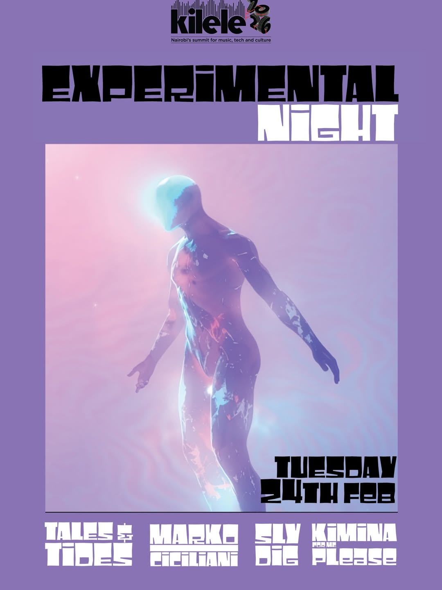

Performance / 2026
Kimina
For Me Please

Context
A live collaboration shaped through electronics, winds and saxophone.
Kimina For Me Please performed as part of Experimental Night from 22:00 to 23:00 on 24 February at The Mist in Nairobi during Kilele Symposium 2026. The set brought electronic instruments into dialogue with live winds and saxophone, unfolding as a collective, exploratory performance.
Kilele’s third edition was organised around the theme “Sound and Solidarity,” gathering artists, producers, instrument makers, sound engineers and culture workers for a week of performances, workshops, panels, installations and shared experimentation. Experimental Night also featured Tales & Toes, Marko Ciciliani and Sly Dig.
Gallery
Experimental Night


Details
- Performance
- Kimina For Me Please
- Programme
- Experimental Night
- Presented by
- Kilele Symposium 2026
- Theme
- Sound and Solidarity
- Date
- 24 February 2026
- Time
- 22:00–23:00
- Venue
- The Mist · The Mall, Westlands · Nairobi